ДКС-АТ1121.
Инструкция по настройке
-
Наклеить на прибор наклейку с номером. В базу настройки АТ1121 записать дату настройки, серийный номер и ФИО регулировщика.
 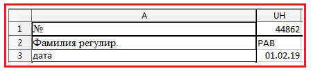
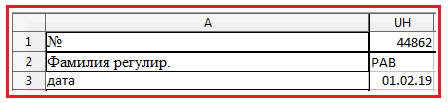
-
В полученные со сборки приборы всавить аккумуляторы, включить, подсоединить питание и поставить на приработку на 24 часа
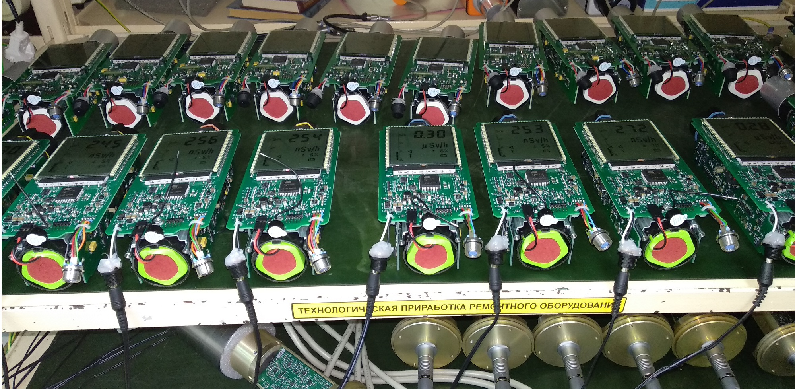 -
Проверить ток потребления: для этого замерить напряжение на R26 (мВ) и вписать значение в базу настроек, база сама высчитает ток:
 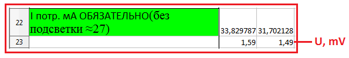
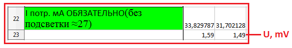
-
Записать номер и дату изготовления в память прибора.
- Подключить дозиметр к адаптеру USB
- Запустить программу BackgroundCalibration. Дозиметр подключится автоматически
- Нажать "Запись идентификационных данных"
- Записать серийный номер, месяц и год производства 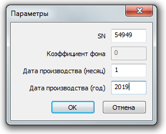

 Если перед тем, как нажать "Запись..." НЕ выделять строку с прибором, Background сам подставит сегодняшнюю дату
Если перед тем, как нажать "Запись..." НЕ выделять строку с прибором, Background сам подставит сегодняшнюю дату -
Перепроверить установленные коэффициенты:
- При включении нажать и удерживать кнопку
- Нажать три раза , на экране появится "---":
- Два раза нажать кнопку
- Набрать "718", для этого с помощью клавиш и выбирается цифра, а спомощью выбирается следующая позиция
- После ввода последней цифры, нажать
- Нажать и удерживать кнопку , появится ".1."
- Нажимая кнопку , выбрать пятый режим
- Переключение коэффициента осуществляется кнопкой , значение коэффициента изменяется кнопками и

Должны стоять такие коэффициенты:
1U 1.0 2U 1.0 3U 1.0 4U 0 5U 0 -
Подстроечным резистором установить фоновые показания прибора. Для этого подстроечным резистором на плате преобразователя импульсов выставить 17-18 Ом.

-
Установить Uвыс резисторами R14, R15 на плате преобразователя напряжения по показаниям от ОСГИ Cs137:
- Закрепить источник ОБЯЗАТЕЛЬНО латунной пластинкой к прибору

- Включить дозиметр
- С помощью подбора номинала резистора R14 (грубо) и регулировкой подстроечного резистора R15 (точно)добиться показаний от источника Cs-137: Чтобы не подбирать номинал резистора наугад, можно воспользоваться такой формой (пока считает не точно, мало статистики): 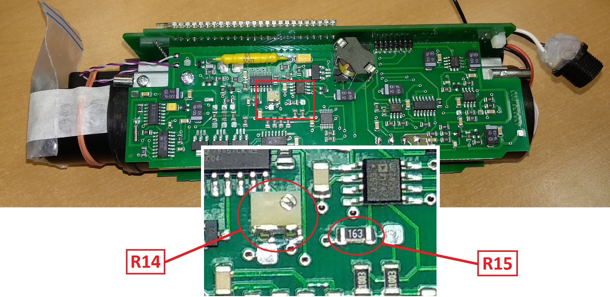 Показания снимать прямо с экрана прибора (можно и с ПК через BackgroundCalibration, но смысл?).
- Проверить показания во втором диапазоне.
Записать в базу настройку показания дозиметра в 1-м и 2-м диапазоне, сопротивление R14 и R15 ⇗
Как переключаться во второй диапазон?
- Одновременно нажать и
- На экране отобразится номер диапазона
- Кнопками и выбрать необходимый диапазон (1, 2, 3)
- После окончания измерений переключиться обратно в первый диапазон
- Для выхода в нормальный режим дновременно нажать и


- Закрепить источник ОБЯЗАТЕЛЬНО латунной пластинкой к прибору
-
Проконтролировать напряжение и форму пробоя светодиода в 1 и 3 диапазоне. Для этого:
- Включить прибор, перейти в 3-ий диапазон
- Одновременно нажать и
- На экране отобразится номер диапазона
- Кнопками и выбрать необходимый диапазон (1, 2, 3)
- После окончания измерений переключиться обратно в первый диапазон
- Для выхода в нормальный режим дновременно нажать и
- С помощью осцилографа проверить сигнал светодиода. Максимум не должен привышать 100В: 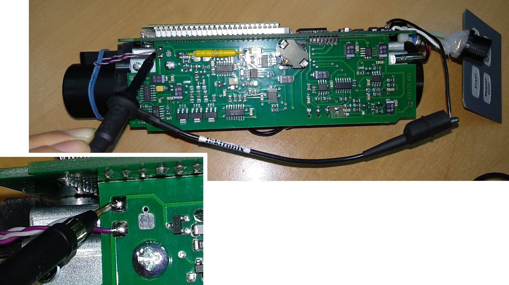 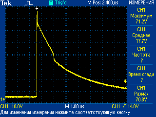
- То же сделать для 1-го диапазона
- Значение напряжения диода для 3-го и 1-го диапазона записать в базу настройки ⇗ 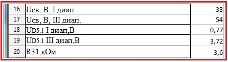
- С помощью мультиметра проверить напряжение на 1-ом выводе микросхемы D5. Напряжение не
должно
превышать 4.9В.

- То же сделать для 1-го диапазона. Если напряжение на 1-м выводе превышает 4.9В, следуе заменить резистор R31 на больший номинал 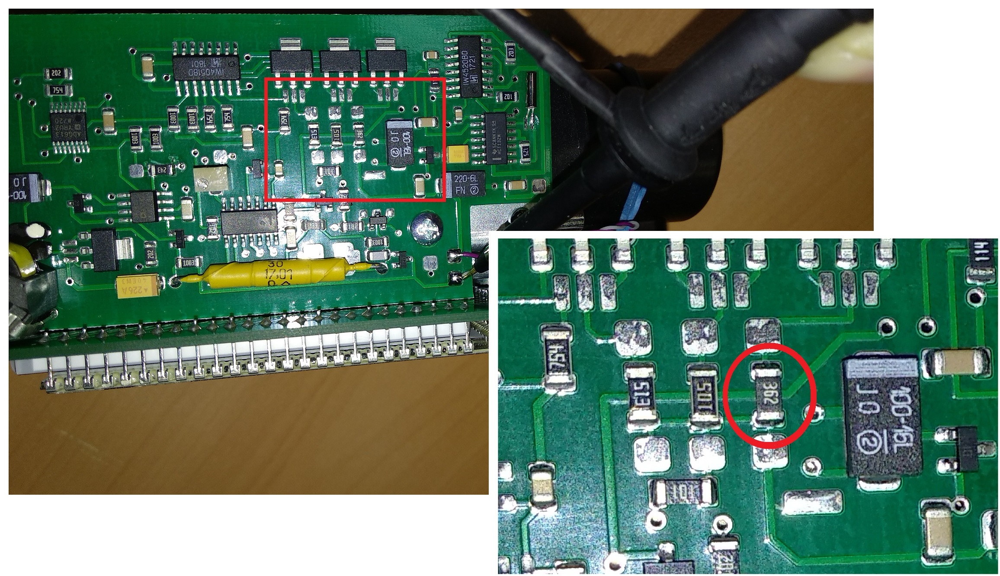
- Напряжение на микросхеме для 3-го и 1-го диапазона, номинал резистора R31 записать в базу настройки ⇗
Как переключаться в третий диапазон?
- Проверить отсутствие показаний прибора во 2 и 3 диапазоне.
-
Проверить высокое
- Осцилографом замерить напряжение на высоком (в 1-м диапазоне): 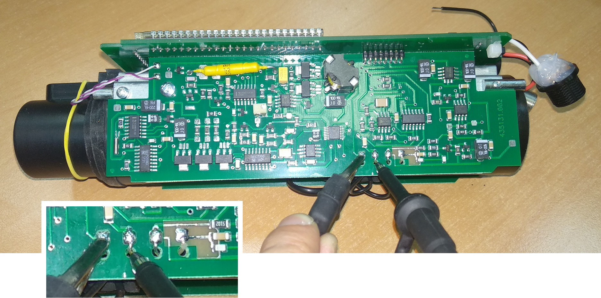 Смотреть значение "Размах": 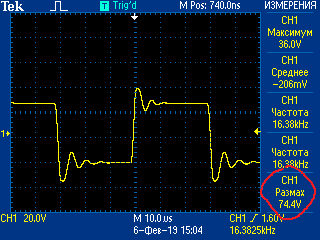
- Высокое будет "прыгать", поэтому удобнее на осцилографе установить режим "Усреднения"
Что ещё за усреднение?
Для этого на осцилографе нажать "Сбор данных" [A], выбрать "Среднее" [B], выставить "Усреднение" равным 128, нажать "Измерения" [C] 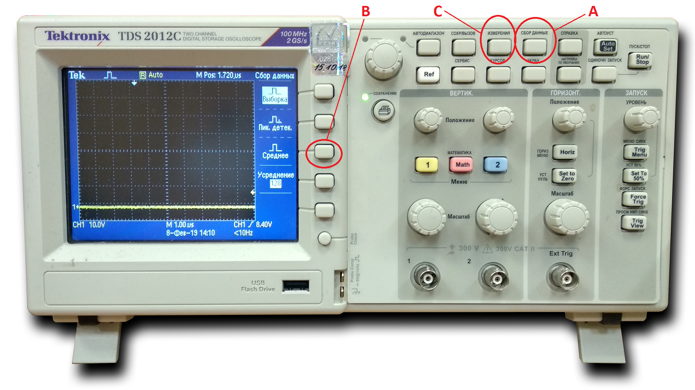 - Записать в базу настройки напряжение высокого 1-ом диапазоне ⇗ 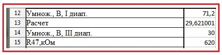
- В ячейке "Расчет" отобразится значение напряжения на высоком в 3-м диапазоне
- Переключится в 3-й диапазон и сравнить напряжение на высоком с расчетным
- Если напряжение примерно совпало, идём дальше, если нет — корректируем. Для этого необходимо подобрать резистор R47. Отклонение от рассчетного значения не должно превышать 0,6-0,8 В
- Чтобы увеличить, надо уменьшить и наоборот 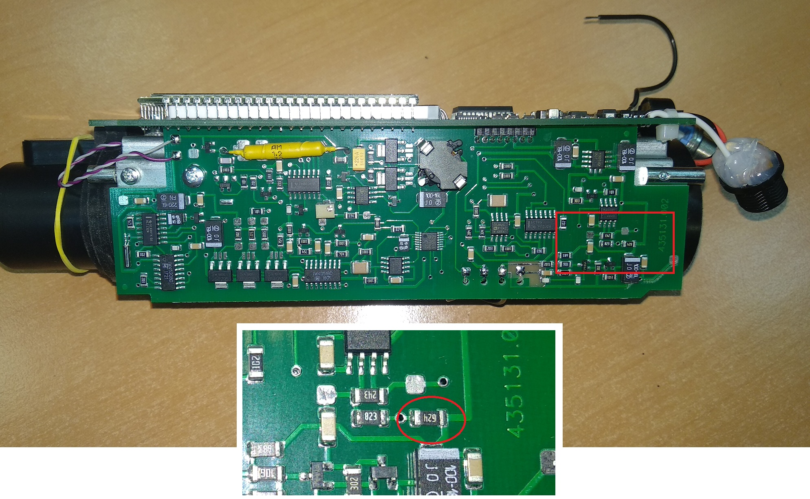
- Записать в базу настройки напряжение высокого 3-ем диапазоне ⇗
- Записать в базу настройки номинал резистора R47 ⇗
-
Установить показания прибора от ОСГИ Сd109 1079:
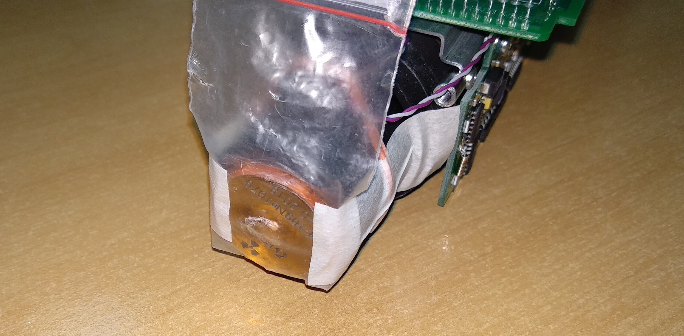- Закрепить источник ОСГИ Сd109 1079 на колпачок
- С помощью резистор R14 (грубо) и подстроечного R15 добиться такого значения мощности дозы:
- Сопротивление R14 не должно превышать 75кОм!
- Сопротивление R15 измеряется при выключенном приборе
- Сопротивление R15 не должно превышать 9кОм!
- Чтобы увеличить значение м.д. сопротивление резистора нужно увеличить, и наоборот
Если уже запаян резистор на максимум (75кОм) и подстроечный выкручен до предела, можно попробовать перепаять вот этот резистор на 620 ом: 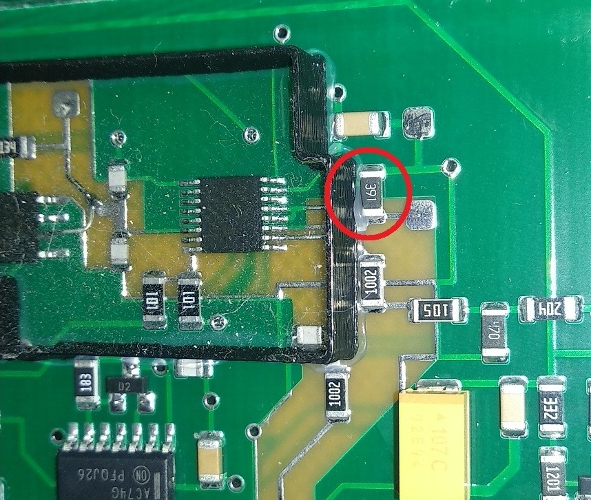- Записать в базу настройки номиналы R14 и R15, значение м.д. от Cd109 ⇗
-
Осцилографом проконтролировать число импульсов сигнала «МВ» на фоне ≈10-15 имп.


- Перепроверить показания по Сs137 и напряжение на D5.1 в 3 диапазоне на плате преобразователя напряжения (см. пункт 7 и 8).
- Зарядить и отдать на УДГ.
-
После того, как вернулись с линейки, проверить данные. Если всё в порядке, отдать Наташе. Настройка закончена.
- Показания по 109Ca [B] должны (примерно) совпасть с эталонным значением [A]
- Показания по 241Am [D] должны (примерно) совпасть с эталонным значением [C]
- 60Co [E] должен показать 10
- Точки 7[F] и 10[G] примерно должны совпасть 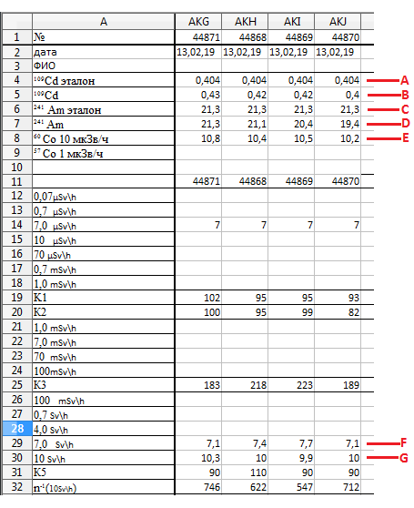